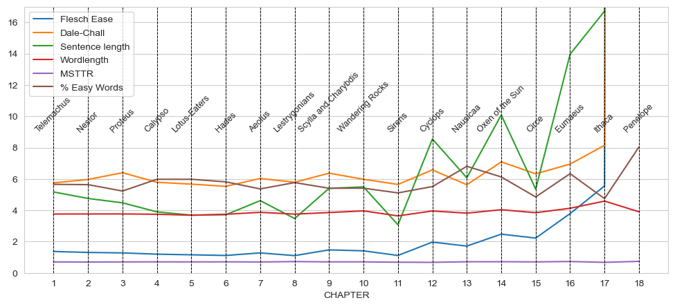

Projects
Reader appreciation and literary quality: Fabula-NET
Postdoctoral research at Aarhus University in the Fabula-NET project: computational methods for estimating how readers appreciate literary narratives.
- using readability indices on literary texts
- measuring literary “quality”: proxies and perspectives
- sentiment arcs and their fractal dynamics as predictors of reader preferences
- diachronic evolution of literary and scientific registers

Machine Learning for the Humanities: open course materials
Nine Jupyter notebooks, slides and a browser game for humanities students with little or no coding, built on public-domain Italian literature. See Teaching.